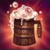
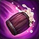
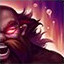
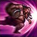
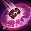

Habilidades
Passiva - Happy Hour
Gragas cura a si mesmo periodicamente após utilizar uma habilidade.
Q - ATIRAR BARRIL
Gragas rola seu barril até um local, que pode ser ativado novamente para explodir ou explodirá sozinho após 4 segundos. Inimigos atingidos pela explosão têm sua Velocidade de Movimento reduzida.
W - FÚRIA DA BEBEDEIRA
Gragas entorna a bebida de seu barril garganta abaixo, canalizando por 1 segundo. Ao terminar, ele fica torpecidamente poderoso, causando mais dano em seu próximo ataque básico e reduzindo o dano recebido
E - BARRIGADA
Gragas avança em direção a um local e colide com a primeira unidade inimiga que encontrar, causando dano a todas as unidades inimigas próximas e atordoando-as.
R - BARRIL EXPLOSIVO
Gragas arremessa seu barril em um local, causando dano e afastando os inimigos pegos no raio da explosão.